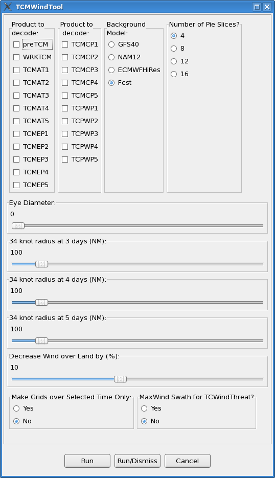

TCMWind Tool
To run the TCMWind tool, select from the GFE main menu,

| Forecast period | Maximum Allowed Wind Value |
| 0 – 24 hours | Maximum Sustained Wind |
| 25-72 hours | 100 knots |
| 73-120 hours | 64 knots |